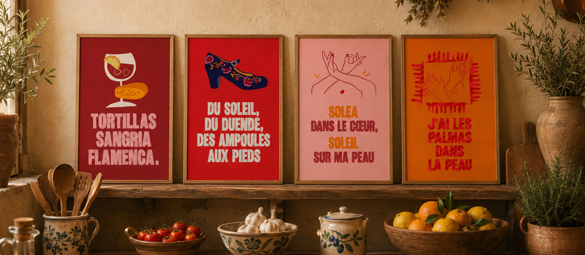
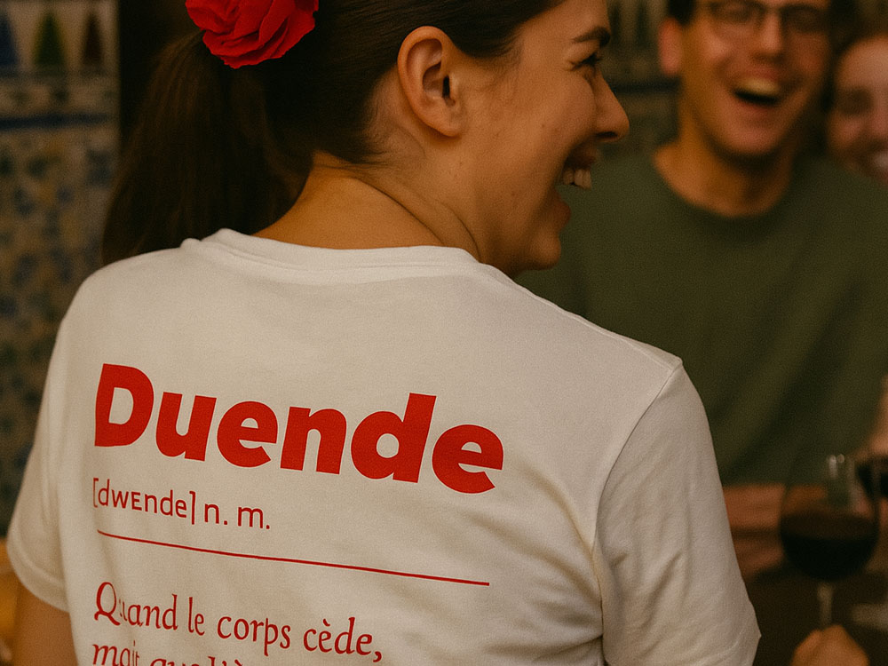
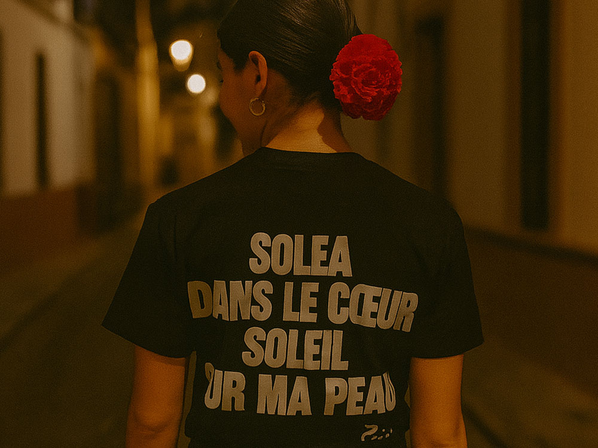

TATA FINA fait vivre la culture andalouse et le flamenco. Pour son événement de l'été, l'association voulait sa propre collection de merch à vendre : prolonger la fête au-delà d'une soirée, et financer la suite. Encore fallait-il une signature assez forte pour qu'on ait envie de la porter.
On a construit une signature à elle : une typo qui claque et une série d'illustrations qui piochent dans le vocabulaire du flamenco, le duende, la soleá, les palmas. Le ton ? Fier et un brin moqueur, comme un soir de feria. De « Tortillas Sangria Flamenca » à « J'ai les palmas dans la peau », chaque pièce porte un slogan qui se retient.
Une collection cohérente et désirable, fidèle à l'esprit de TATA FINA.


Des illustrations originales déclinées en tee-shirts unisexes et en posters encadrés. Un merch qu'on porte par envie, pas par soutien, et une nouvelle source de revenus pour l'association.